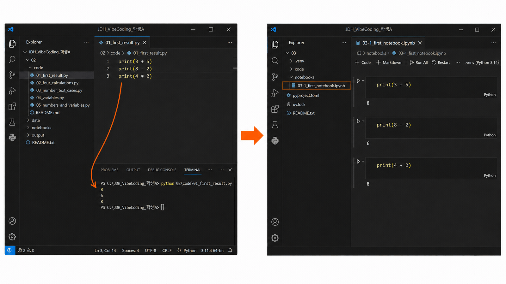
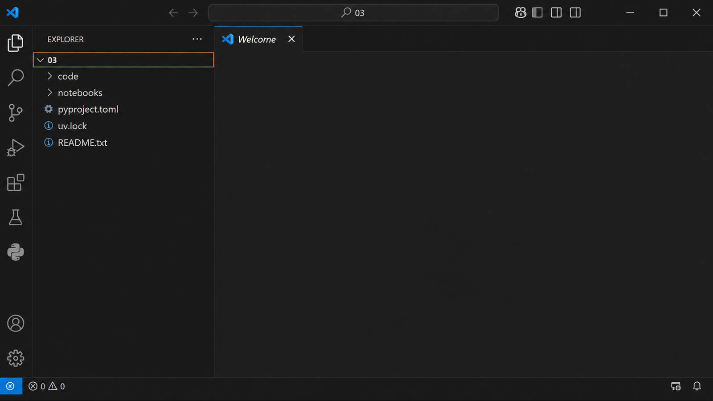
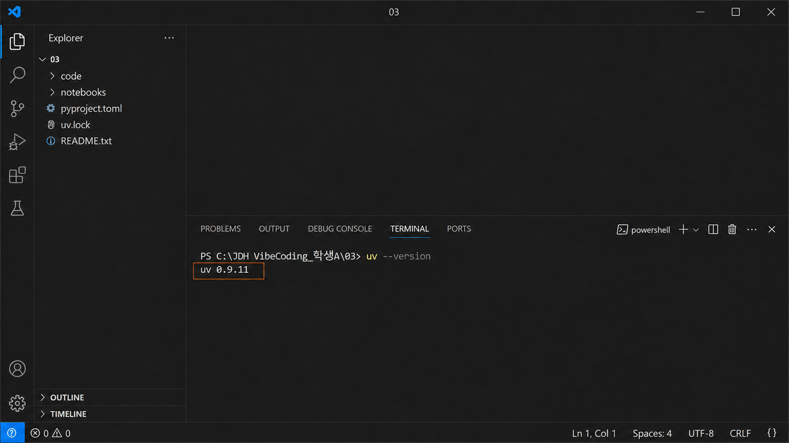
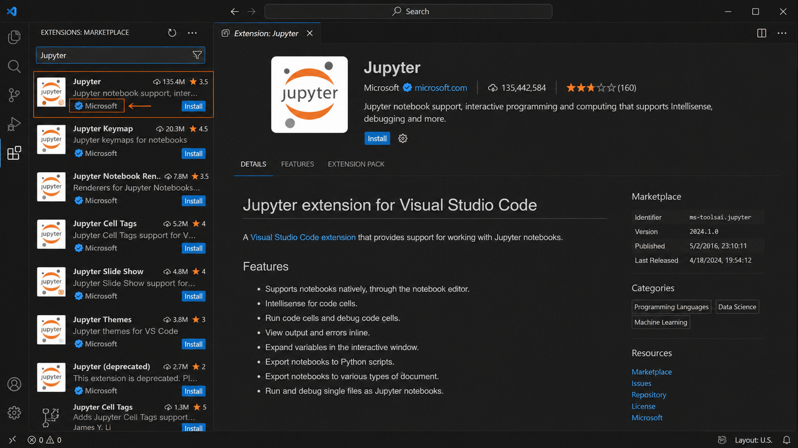
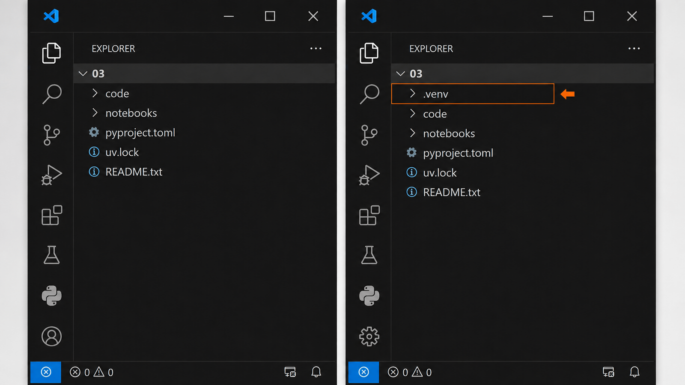
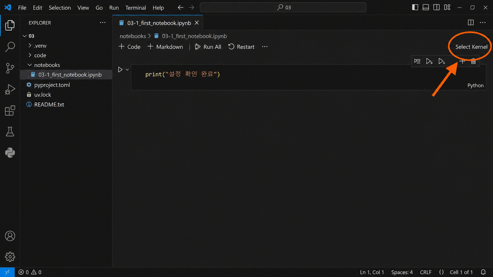
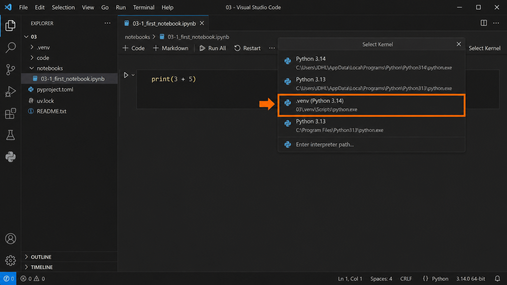
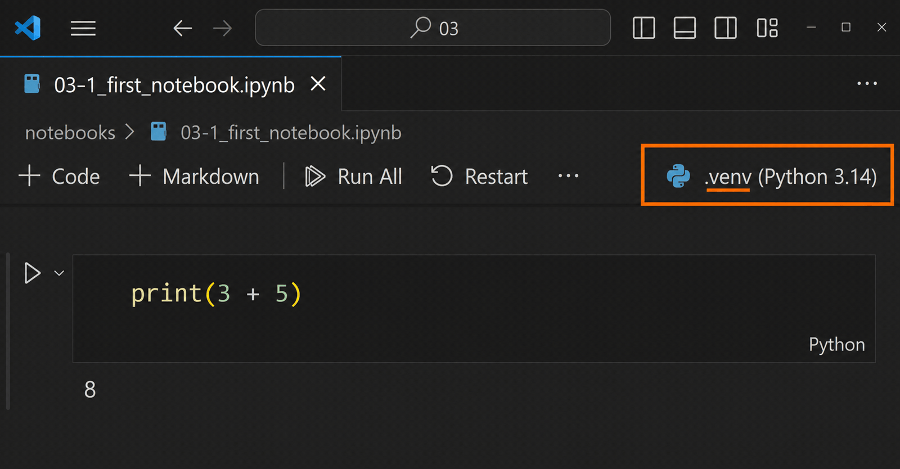
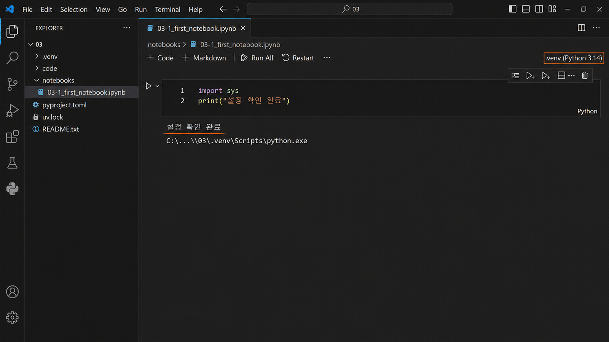

실습 환경 준비와 비교 결과로 판단하기准备实践环境并用比较结果进行判断
코드 바로 아래에서 결과를 본다在代码正下方看结果
지난 시간에는 .py 파일을 실행하면 결과가 아래쪽 터미널에 글자로 나왔습니다. 오늘은 코드 바로 아래에 결과가 붙어 나오는 방식을 준비합니다.上次运行 .py 文件时，结果以文字形式出现在下方终端。今天要准备结果直接出现在代码下方的方式。

이런 파일을 Notebook이라고 부르고 파일 이름이 .ipynb로 끝납니다. 설명과 코드와 결과가 한 화면에 순서대로 쌓이기 때문에, 무엇을 했고 무엇이 나왔는지 나중에 다시 읽기 좋습니다.这样的文件叫 Notebook，文件名以 .ipynb 结尾。说明、代码与结果按顺序堆叠在同一画面，方便日后回看做了什么、得到了什么。
오늘 바꾸는 것은 결과가 나오는 곳입니다. 새로운 문법을 배우는 시간이 아닙니다.今天要改变的是结果出现的地方，不是学习新语法。
학생용 자료를 내려받는다下载学生资料 실습实践
아래 버튼으로 이번 차시의 자료를 내려받습니다. 압축을 풀면 03 폴더가 나옵니다. 2주차에 만든 JDH_VibeCoding_자기이름 폴더 안에 넣습니다.用下方按钮下载本课资料。解压后会出现 03 文件夹，把它放进 第 2 周建好的 JDH_VibeCoding_自己的名字 文件夹里。
notebooks에 오늘 실행할 파일이, pyproject.toml과 uv.lock에 이 폴더가 쓸 도구 목록이 들어 있습니다. .venv는 아직 없습니다. 그것을 만드는 것이 이번 단계입니다.notebooks 里是今天要运行的文件，pyproject.toml 和 uv.lock 里是这个文件夹要用的工具清单。.venv 还没有，本步骤就是把它做出来。
- 위 버튼으로
03_student_files.zip을 내려받는다.用上方按钮下载03_student_files.zip。 - 마우스 오른쪽 버튼 → 압축 풀기를 누른다.
03폴더가 나온다.点击鼠标右键 → 解压，会出现03文件夹。 - 2주차에 만든
JDH_VibeCoding_자기이름폴더 안에 넣는다.把它放进 第 2 周建好的JDH_VibeCoding_自己的名字文件夹里。
여기까지가 탐색기에서 하는 일입니다. VS Code는 아직 열지 않습니다. 도구를 먼저 깔고, 그 다음에 이 폴더를 엽니다.到这里为止是在资源管理器里做的事。先不要打开 VS Code。先安装工具，然后再打开这个文件夹。
Python은 이미 깔았는데 왜 또?Python 已经装过了，为什么还要装？
여기서 uv라는 도구를 하나 설치합니다. 그런데 Python은 2-1에서 이미 설치했는데 왜 또 설치할까요?这里要安装一个叫 uv 的工具。可是 2-1 已经装过 Python 了，为什么还要再装？
| 2-1에서 깐 것 — Python2-1 装的 — Python | 오늘 깔 것 — uv今天要装的 — uv | |
|---|---|---|
| 어디에在哪里 | 컴퓨터에 하나 있습니다整台电脑上有一个 | 폴더마다 필요한 것을 그 폴더 안에 챙겨 줍니다把每个文件夹需要的东西放进那个文件夹里 |
| 하는 일作用 | 코드를 실행합니다运行代码 | 그 폴더에서 무엇으로 실행할지 준비해 둡니다准备好这个文件夹里用什么来运行 |
그러니까 Python을 또 까는 것이 아닙니다. 앞으로 수업마다 폴더를 하나씩 만들 텐데, 폴더마다 필요한 것이 다릅니다. uv는 그 폴더에서 쓸 것을 그 안에 챙겨 주는 도구입니다.所以不是再装一次 Python。以后每次上课都会建一个文件夹，每个文件夹需要的东西不一样。uv 就是把这个文件夹要用的东西准备在里面的工具。
뒤에서 Notebook을 열 때 어떤 Python으로 실행할지 골라 주게 되는데, 그때 고르는 것이 바로 이 폴더 안에 만들어진 것입니다.后面打开 Notebook 时要选择用哪个 Python 运行，那时选的就是这个文件夹里做好的那个。
앞 그림의 오른쪽 화면까지 가려면 세 가지가 필요합니다. 오늘 이 순서대로 준비합니다.要做到上图右边那样的画面，需要三样东西。今天按这个顺序准备。
| 순서顺序 | 무엇을做什么 | 왜为什么 |
|---|---|---|
| ① | uv 설치安装 uv | 이 폴더에서 쓸 것을 챙겨 준다把这个文件夹要用的东西准备好 |
| ② | Jupyter 확장 설치安装 Jupyter 扩展 | 코드 아래에 결과가 나오는 파일을 열 수 있게 한다让我们能打开那种结果显示在代码下方的文件 |
| ③ | 커널 연결连接内核 | 어떤 Python으로 실행할지 고른다选择用哪个 Python 运行 |
폴더마다 챙기는 것이 다르다每个文件夹要带的东西不同
사람마다 하는 일이 다르면 챙기는 도구도 다릅니다. 폴더도 마찬가지입니다.做的事不同，要带的工具也不同。文件夹也是一样。
① uv를 설치한다① 安装 uv 실습实践
① uv를 설치합니다. 아래 한 줄을 PowerShell에 복사해 붙여 넣습니다. uv 공식 홈페이지가 안내하는 방법입니다. 직접 입력하지 말고 복사하세요. 설치가 끝나면 PowerShell을 완전히 닫고 새로 연 뒤 확인합니다. 2-1에서 익힌 프로그램 이름 + --version 방식이 여기서도 그대로 쓰입니다.① 安装 uv。 把下面这一行复制粘贴到 PowerShell。这是 uv 官方网站给出的方法。不要手动输入，请复制。安装完成后完全关闭并重新打开 PowerShell 再确认。2-1 学过的程序名 + --version 方式在这里同样适用。
powershell -ExecutionPolicy ByPass -c "irm https://astral.sh/uv/install.ps1 | iex"
uv --version
uv 0.9.x
터미널은 열릴 때 프로그램 목록을 한 번 읽습니다. 그 뒤에 설치된 것은 새 창에서만 보입니다. 2-1에서 PowerShell을 새로 열었던 것과 같은 이유입니다.终端在打开时会读取一次程序列表。之后安装的程序只在新窗口中才能看到。这与 2-1 中重新打开 PowerShell 的原因相同。
번호가 나오면 다음 쪽은 건너뜁니다. 번호가 안 나올 때만 다음 쪽을 봅니다.出现版本号就跳过下一页。只有没出现版本号时才看下一页。
설치는 됐는데 이름을 못 찾을 때装好了却找不到名字时 확장拓展
번호가 안 나온 사람만 봅니다.只有没出现版本号的人才看。
2주차에 있었던 일. 2-1에서 Node와 Python은 아무 문제 없이 됐습니다. OpenCode 하나만 안 됐습니다. 설치는 끝났는데, 그 프로그램이 들어간 폴더를 PowerShell이 모르고 있었습니다.第 2 周发生过的事。2-1 里 Node 和 Python 都没出问题，只有 OpenCode 不行。其实已经装好了，只是 PowerShell 不知道那个程序所在的文件夹。
uv : 'uv' 용어가 cmdlet, 함수, 스크립트 파일 또는 실행할 수 있는 프로그램 이름으로 인식되지 않습니다.
- PowerShell을 완전히 닫고 새로 엽니다. 창은 열릴 때 프로그램 목록을 한 번만 읽습니다. 대부분 여기서 됩니다.完全关闭并重新打开 PowerShell。窗口只在打开时读取一次程序列表。多数情况到这一步就好了。
- 그래도 안 되면 아래 한 줄로 파일이 있는지 봅니다.如果还不行，用下面这一行看看文件在不在。
Test-Path "$env:USERPROFILE\.local\bin\uv.exe"
True — 파일은 있는데 PowerShell이 못 찾는 것입니다. 다음 쪽으로 갑니다. / False — 설치가 안 된 것입니다. 「① uv를 설치한다」를 다시 하고, 또 안 되면 손을 듭니다.True —— 文件在，只是 PowerShell 找不到。去下一页。 / False —— 没装上。重做「① 安装 uv」，还不行就举手。
True가 나왔을 때 — 있는 곳을 알려 준다出现 True 时 —— 告诉它在哪里 확장拓展
앞 쪽에서 True가 나온 사람만 합니다. 2-1의 「PATH에 한 번만 추가한다」와 같은 일이고, 넣는 위치만 다릅니다.只有上一页出现 True 的人才做。这和 2-1 的「只往 PATH 里加一次」是同一件事，只是加的位置不同。
$uvBin = Join-Path $env:USERPROFILE ".local\bin"
[string]$userPath = [Environment]::GetEnvironmentVariable("Path", "User")
$items = @( ($userPath -split ";") | ForEach-Object { $_.Trim() } | Where-Object { $_ } )
if ($items -notcontains $uvBin) {
[Environment]::SetEnvironmentVariable("Path", (($items + $uvBin) -join ";"), "User")
}- PowerShell과 VS Code를 모두 닫고 새로 엽니다. 안 닫으면 바뀐 것이 보이지 않습니다.关闭 PowerShell 和 VS Code，再重新打开。不关就看不到改动。
- 아래 두 줄로 확인합니다. 위는 어디에 있는지, 아래는 번호를 보여 줍니다.用下面两行确认。上面显示在哪里，下面显示版本号。
where.exe uv uv --version
여기까지 했는데도 번호가 안 나오면 손을 듭니다. 학교 PC가 설정 바꾸기를 막아 둔 경우라 학생이 할 수 있는 일이 없습니다.做到这里还是没有版本号就举手。这是学校电脑禁止修改设置的情况，学生自己没办法。
VS Code를 열고 03 폴더를 연다打开 VS Code 并打开 03 文件夹 실습实践
uv는 방금 PowerShell에서 설치했습니다. 이제 VS Code를 엽니다. 앞으로 수업은 VS Code 안에서 하니까, 아까 내려받아 둔 03 폴더를 열고 거기서부터 시작합니다.uv 刚才是在 PowerShell 里安装的。现在打开 VS Code。以后上课都在 VS Code 里进行，所以要打开刚才下载好的 03 文件夹，并从那里开始。
- VS Code를 연다.打开 VS Code。
- 아까 넣어 둔
03폴더를 통째로 연다. 파일 하나만 열면 다음 단계가 되지 않는다.把刚才放好的03文件夹整个打开。只打开一个文件的话，下一步无法进行。 - 왼쪽 탐색기 맨 위에
03이 보이는지 본다.看左侧资源管理器最上方是否显示03。

VS Code 안에서도 uv가 되는지 본다确认在 VS Code 里 uv 也能用 실습实践
uv는 PowerShell에서 설치했습니다. 앞으로 수업은 VS Code 안에서 하니까, VS Code의 터미널에서도 같은 명령이 되는지 한 번 더 확인합니다.uv 是在 PowerShell 里安装的。以后上课都在 VS Code 里进行，所以要在 VS Code 的终端里再确认一次同样的命令能不能用。
uv --version

② Jupyter 확장을 설치한다② 安装 Jupyter 扩展 실습实践
VS Code 왼쪽 확장 화면에서 Jupyter를 검색합니다. 게시자가 Microsoft인지 확인한 뒤 설치합니다.在 VS Code 左侧扩展界面搜索 Jupyter。确认发布者是 Microsoft 后再安装。
| 확장扩展 | 하는 일作用 | 언제何时 |
|---|---|---|
| Python | .py 파일 실행과 Python 선택을 돕는다帮助运行 .py 并选择 Python | 2-1 |
| Jupyter | .ipynb Notebook을 열고 셀별로 실행하게 한다打开 .ipynb 并逐个单元格运行 | 오늘今天 |
확장은 VS Code에 기능을 덧붙이는 작은 도구입니다. Python 자체와는 다릅니다.扩展是给 VS Code 增加功能的小工具，与 Python 本身不同。

이 폴더에서 쓸 자리를 만든다为这个文件夹准备一个专用的运行环境 실습实践
이제 앞에서 설치한 uv를 처음 써 봅니다. 이 폴더에서 쓸 것을 챙겨 이 폴더 안에 넣어 줍니다.现在第一次使用前面装好的 uv。它会把这个文件夹要用的东西准备好并放进来。
- 실행하기 전에 왼쪽 탐색기를 한 번 본다.运行之前先看一眼左侧资源管理器。
- 아래 명령을 실행한다.执行下面的命令。
- 탐색기를 다시 본다.
.venv폴더가 새로 보이면 끝난 것이다.再看一次资源管理器。出现新的.venv文件夹就完成了。
uv sync
.venv는 이 프로젝트가 쓸 Python이 들어 있는 폴더입니다. 지금은 이만큼만 알면 됩니다..venv 是存放这个项目所用 Python 的文件夹。现在知道这些就够了。
무엇이 달라졌는지 찾는다找出发生了什么变化 실습实践

③ 커널을 고르고 첫 셀을 실행한다③ 选择内核并运行第一个单元格 실습实践
이제 준비한 것을 실제로 씁니다. 하는 일은 셋입니다. 버튼을 찾고, 목록에서 고르고, 제대로 골랐는지 확인합니다.现在真正来用准备好的东西。要做的有三件：找到按钮、在列表中选择、确认是否选对。
- 선생님이 준
.ipynb파일을 연다.打开老师给的.ipynb文件。 - 오른쪽 위 커널 선택을 누른다.点击右上角的选择内核。
- 경로에 이 프로젝트 이름과
.venv가 보이는 것을 고른다.选择路径中含有本项目名称和.venv的那一项。 - 첫 셀을 실행한다.运行第一个单元格。
커널은 이 Notebook의 코드를 실제로 실행해 줄 Python입니다. 어느 Python으로 실행할지 정하는 일이 커널 선택입니다. 앞에서 uv sync로 만든 .venv 안의 Python을 고르면 됩니다.内核就是实际运行这个 Notebook 代码的 Python。选择用哪个 Python 运行，就是选择内核。选前面用 uv sync 生成的 .venv 里的 Python 即可。
버튼은 오른쪽 위 구석에 있다按钮在右上角 실습实践
처음 여는 학생이 가장 많이 헤매는 자리입니다. 파일을 열면 버튼은 늘 같은 곳에 있습니다.这是第一次打开时最容易找不到的地方。打开文件后，按钮总在同一个位置。

버튼에 적힌 글자는 상황에 따라 다릅니다. 아직 안 골랐으면 커널 선택 또는 Select Kernel, 이미 골랐으면 고른 커널의 이름이 보입니다. 글자는 달라도 자리는 같습니다.按钮上的文字会随情况变化。还没选时显示选择内核或 Select Kernel，已经选过时显示所选内核的名称。文字不同，位置相同。
목록에서 이 폴더의 .venv를 고른다在列表中选择本文件夹的 .venv 실습实践
버튼을 누르면 화면 위쪽에서 목록이 내려옵니다. 이름이 비슷한 것이 여러 개 나오므로 무엇을 보고 고르는지가 중요합니다.点击按钮后，列表会从画面上方展开。会出现好几个名字相似的项目，所以看什么来选很重要。

고르는 기준은 하나입니다. 경로에 이 폴더 이름(03)과 .venv가 같이 들어 있는 항목. Python 3.13 (global)처럼 .venv가 없는 것은 아닙니다. 목록에 「추천」이라고 붙어 있어도 기준은 그대로입니다.判断标准只有一个。路径中同时含有本文件夹名称（03）和 .venv 的那一项。像 Python 3.13 (global) 这种路径里没有 .venv 的，都不要选。即使列表标着“推荐”，标准也不变。
목록에 .venv가 안 보이면列表里没有 .venv 时 실습实践
목록을 다 봤는데 .venv가 들어간 항목이 하나도 없다면, 거의 언제나 폴더를 잘못 연 것입니다.如果把列表看完也找不到含 .venv 的项目，那几乎总是打开的文件夹不对。
| 지금 화면当前画面 | 무슨 뜻인가这是什么意思 |
|---|---|
탐색기 맨 위가 03이 아니다资源管理器最上方不是 03 | 03보다 위 폴더를 열었습니다. 목록에 .venv가 나오지 않습니다.打开了比 03 更上层的文件夹。列表里不会出现 .venv。 |
탐색기 맨 위가 03이다资源管理器最上方是 03 | 제대로 열었습니다. 목록 아래쪽에 .venv 항목이 나옵니다.打开正确。列表下方会出现 .venv 项目。 |
- VS Code에서 파일 → 폴더 열기를 누른다.在 VS Code 中点击文件 → 打开文件夹。
JDH_VibeCoding_자기이름안의03폴더를 고른다. 03 안으로 들어가서 고르는 것이 아니라, 03 자체를 고른다.选择JDH_VibeCoding_自己的名字里的03文件夹。不是进入 03 里面再选，而是选 03 本身。- 탐색기 맨 위에
03이 보이는지 확인한다.确认资源管理器最上方显示03。 - Notebook을 다시 열고 커널을 다시 고른다.重新打开 Notebook 并重新选择内核。
.venv는 연 폴더 바로 안에 있어야 목록에 나옵니다. 03보다 위 폴더를 열면 그 안쪽에 있는 .venv는 찾아 주지 않습니다..venv 必须直接位于所打开的文件夹内才会出现在列表里。如果打开了比 03 更上层的文件夹，就不会找到里面的 .venv。
제대로 골랐는지 확인한다确认是否选对 실습实践
고르고 나면 아까 버튼이 있던 그 자리에 고른 커널의 이름이 그대로 뜹니다. 거기에 .venv가 보이면 맞게 고른 것입니다.选好后，刚才按钮所在的位置会显示所选内核的名称。那里能看到 .venv 就说明选对了。

여기서 다른 것을 고르면 나중에 셀이 실행되지 않거나 결과가 이상하게 나옵니다. 경로에 .venv가 있는지 눈으로 확인하세요.这里如果选错，之后单元格可能无法运行或结果异常。请用眼睛确认路径中是否有 .venv。
첫 셀을 실행한다运行第一个单元格 실습实践
커널까지 골랐으면 이제 실행합니다. 셀 왼쪽의 ▶ 버튼을 누르거나 Shift+Enter를 누릅니다.选好内核后就可以运行了。点击单元格左侧的 ▶ 按钮，或按 Shift+Enter。
import sys
print("설정 확인 완료")
print("지금 쓰는 Python 위치:")
print(sys.executable)
칸을 다루는 법과 단축키操作单元格的方法与快捷键 실습实践
Notebook은 칸 단위로 움직입니다. 칸 하나를 실행하면 그 칸 아래에 결과가 붙습니다. 오늘 필요한 것은 이만큼입니다.Notebook 以单元格为单位运行。运行一个单元格，结果就出现在那个单元格下方。今天需要的就这些。
| 하고 싶은 일想做的事 | 버튼으로用按钮 | 단축키快捷键 |
|---|---|---|
| 이 칸 실행하고 아래 칸으로运行本格并移到下一格 | 칸 왼쪽 ▶单元格左侧 ▶ | Shift + Enter |
| 이 칸 실행하고 그대로 머무르기运行本格并停在原处 | —— | Ctrl + Enter |
| 위에서부터 전부 실행从上到下全部运行 | 위쪽 모두 실행上方全部运行 | — |
| 코드 칸 추가添加代码格 | + 코드+ 代码 | Esc 다음 B |
| 글 칸 추가添加文字格 | + Markdown+ Markdown | Esc 다음 M |
| 칸 지우기删除单元格 | 칸 오른쪽 휴지통单元格右侧垃圾桶 | Esc 다음 D, D |
| 실행 멈추기停止运行 | 위쪽 중단上方中断 | — |
칸 안을 눌러 글자를 쓰는 중에는 B·M·D가 그냥 글자로 들어갑니다. Esc를 한 번 눌러 칸 밖으로 나온 뒤에 눌러야 단축키로 듣습니다.在单元格内输入文字时，B·M·D 只会当作文字打进去。要先按一次 Esc 退出单元格，快捷键才生效。
칸은 위에서부터 차례로 실행합니다. 위 칸을 건너뛰면 아래 칸에서 “이름이 없다”는 오류가 납니다. 결과가 꼬였다 싶으면 위쪽 다시 시작을 누르고 처음부터 다시 실행하면 됩니다.单元格要从上往下依次运行。跳过上面的单元格，下面就会报“名称不存在”的错误。如果结果乱了，点上方的重启，再从头运行一遍即可。
여기까지 되면 준비 끝做到这里就准备好了
uv --version에 번호가 보인다.uv --version显示版本号。- 탐색기에
.venv폴더가 있다.资源管理器中有.venv文件夹。 - 커널 이름에
.venv가 들어 있다.内核名称中含有.venv。 - 코드 셀 아래에 결과가 나타났다.代码单元格下方出现了结果。
계산은 값을, 비교는 판단을 만든다计算产生值，比较产生判断
score = 72 print(score + 10) print(score >= 60)
82 True
| 표현表达式 | 결과结果 | 종류类型 |
|---|---|---|
score + 10 | 82 | 숫자数字 |
score >= 60 | True | 조건이 맞는지条件是否成立 |
두 값을 견주어 조건이 맞는지 알려 주는 것을 비교연산이라고 합니다. 계산은 새로운 값을 만들고, 비교는 판단을 만듭니다.比较两个值、告诉我们条件是否成立，这叫比较运算。计算产生新的值，比较产生判断。
True와 False는 정답과 오답이 아닙니다. 지금 정한 조건이 맞는지를 나타내는 값입니다.True 与 False 不是答对与答错，而是表示当前设定的条件是否成立的值。
비교연산자 여섯 개六个比较运算符
| 기호符号 | 뜻含义 | 예例 | 결과结果 |
|---|---|---|---|
> | 크다大于 | 8 > 5 | True |
< | 작다小于 | 8 < 5 | False |
>= | 크거나 같다大于等于 | 8 >= 8 | True |
<= | 작거나 같다小于等于 | 8 <= 7 | False |
== | 같다等于 | 8 == 8 | True |
!= | 같지 않다不等于 | 8 != 5 | True |
가장 먼저 구분할 것은 등호 하나와 등호 둘입니다.最先要分清的是一个等号和两个等号。
| 표현表达式 | 하는 일作用 |
|---|---|
score = 72 | 72라는 값을 score라는 이름에 저장한다把 72 这个值存进 score 这个名字里 |
score == 72 | score에 들어 있는 값이 72와 같은지 비교한다比较 score 中的值是否等于 72 |
등호는 뒤에 옵니다. “크거나 같다”를 소리 나는 대로 =>라고 쓰는 실수가 많습니다. Python은 >=와 <=만 압니다. =>라고 쓰면 값이 아니라 SyntaxError가 나옵니다.等号在后面。按读音把“大于等于”写成 => 是常见错误。Python 只认 >= 和 <=。写成 => 不会得到结果，而是出现 SyntaxError。
기호를 외우려 하지 말고 하나만 기억하세요. 등호가 붙어 있으면 같을 때도 참입니다.不要死记符号，只记住一点：带等号时，相等也成立。
정확히 기준에 걸린 사람正好卡在标准上的人 실습实践
60점 이상이면 통과입니다. 정확히 60점을 받은 사람은 통과일까요?60 分以上算通过。那么正好考 60 分的人算通过吗？
실행하기 전에 세 줄의 결과를 예상해 적어 보세요.运行之前先预测三行的结果并写下来。
print(59 >= 60) print(60 >= 60) print(61 >= 60)
False True True
기호 하나가 한 사람을 가른다一个符号，决定一个人过不过 핵심核心
가운데 줄이 오늘의 핵심입니다. 정확히 60점인 사람도 통과입니다. 기호가 >였다면 결과가 달라집니다.中间那一行是今天的重点。正好 60 分的人也通过。如果符号是 >，结果就会不同。
print(60 > 60) print(60 >= 60)
False True
>와 >=의 차이는 딱 한 사람에게서 갈립니다. 정확히 기준에 걸린 사람입니다. 규칙을 만들 때 가장 많이 다투는 지점도 여기입니다.> 与 >= 的差别只落在一个人身上：正好卡在标准上的人。制定规则时争议最多的也是这里。
문장 속의 기준을 찾아낸다找出句子中的标准 핵심核心
우리가 쓰는 규칙은 대부분 문장으로 되어 있습니다. 문장을 비교식으로 옮기려면 네 가지를 차례로 찾아야 합니다.我们使用的规则大多是句子。要把句子转成比较式，需要依次找出四样东西。
- 무엇을 비교하는가 — 사람마다 달라지는 값比较什么 — 因人而异的值
- 기준값은 얼마인가 — 규칙이 정해 둔 값标准值是多少 — 规则设定的值
- 기준값 자신은 포함되는가标准值本身是否包含在内
- 어떤 기호를 쓰는가 — 위 셋이 정해지면 기호는 자동으로 결정된다用哪个符号 — 前三项确定后符号自动确定
"체온이 37.5도 이상이면 보건실에 간다." 비교할 값 → 체온 기준값 → 37.5 경계 포함? → 이상 → 37.5도도 포함 비교식 → 체온 >= 37.5
우리말과 기호를 짝지어 둔다把说法和符号对应起来 핵심核心
| 우리말韩语表达 | 기준값 포함是否包含标准值 | 기호符号 |
|---|---|---|
| 이상以上 | 포함한다包含 | >= |
| 초과超过 | 포함하지 않는다不包含 | > |
| 이하以下 | 포함한다包含 | <= |
| 미만未满 | 포함하지 않는다不包含 | < |
문장을 비교식으로 옮기기把句子转成比较式 실습实践
여섯 문장을 읽고 네 칸을 채웁니다. 코드를 실행하지 않습니다. 손으로 적습니다.阅读六个句子并填写四栏。不运行代码，用手写。
| # | 문장句子 | 비교할 값比较的值 | 기준값标准值 | 경계 포함?含边界？ | 비교식比较式 |
|---|---|---|---|---|---|
| 1 | 체온이 37.5도 이상이면 보건실에 간다.体温 37.5 度以上去保健室。 | ||||
| 2 | 지각은 8시 30분을 넘겨 교실에 들어오는 것이다.迟到指超过 8 点 30 分进教室。 | ||||
| 3 | 도서관에서 책은 한 번에 3권까지 빌릴 수 있다.图书馆的书一次最多可以借 3 本。 | ||||
| 4 | 18세 미만은 이 영화를 볼 수 없다.未满 18 岁不能看这部电影。 | ||||
| 5 | 수행평가는 60점 이상이어야 통과다.过程性评价需 60 分以上才通过。 | ||||
| 6 | 국어 점수가 영어 점수와 다르면 표시한다.韩语课分数与英语分数不同时做标记。 |
- 여섯 칸을 모두 채웠다.六行都填完了。
- 이상·초과·이하·미만 중 어느 말인지 문장에서 찾아 표시했다.已在句子中找出并标出是以上·超过·以下·未满中的哪一个。
- 기준값 자신이 포함되는지 아닌지 적었다.写出了标准值本身是否包含在内。
정확한 말과 애매한 말精确的说法与模糊的说法 핵심核心
이상·초과·이하·미만은 경계값을 포함하는지가 분명합니다. 그런데 우리가 실제로 더 자주 쓰는 말은 까지, 안에, 넘으면 같은 표현입니다. 이런 말은 사람마다 다르게 읽힐 수 있습니다.以上·超过·以下·未满是否含边界很清楚。但我们平时更常用的是……之前、……之内、过了……就这类说法。同一句话，不同的人可能理解不一样。
“과제는 9월 3일까지 제출하세요.” — 9월 3일 밤에 낸 사람은 늦은 걸까요?“作业请在 9 月 3 日之前提交。” — 9 月 3 日晚上交的人算迟交吗？
규칙을 코드로 옮기려면 이런 것을 애매한 채로 둘 수 없습니다. 규칙을 만든 사람에게 묻거나, 물을 수 없으면 내가 어떻게 읽었는지 밝혀 두어야 합니다.要把规则写成代码，就不能让这些含糊不清。要么问定规则的人，要么写明自己是怎么理解的。
여러분이 나중에 서비스를 만들 때 기획서를 쓰게 됩니다. 그때 “언제 성공이라고 볼 것인가”를 정하는데, 오늘 연습한 것이 그대로 쓰입니다.以后做服务时要写策划书，那时要定“什么时候算成功”，今天练习的内容会直接用上。
같은 문장이 다르게 읽힌다同一句话有不同读法 핵심核心
“과제는 9월 3일까지 제출하세요.”“作业请在 9 月 3 日之前提交。”
한 사람은 3일을 마지막 날로 읽고, 다른 사람은 2일을 마지막 날로 읽습니다. 둘 다 문장을 제대로 읽었습니다. 문장이 정하지 않은 것을 각자 채운 것뿐입니다.一个人把 3 日当作最后一天，另一个人把 2 日当作最后一天。两人都没有读错，只是各自补上了句子没说清的部分。
오늘 남길 것今天要记住的
- Notebook은 코드 바로 아래에 결과가 붙어 나오는 파일이다.Notebook 是结果直接出现在代码下方的文件。
- Notebook을 실행하려면 이 프로젝트가 쓸 Python을 골라 줘야 한다.运行 Notebook 需要选择这个项目要用的 Python。
- 계산은 값을 만들고 비교는 판단을 만든다.计算产生值，比较产生判断。
=는 저장,==는 비교다.=是存入，==是比较。- 이상·이하는 기준값을 포함하고 초과·미만은 포함하지 않는다.以上·以下包含标准值，超过·未满不包含。
까지,안에같은 말은 사람마다 다르게 읽힐 수 있다.……之前、……之内这类说法因人而异。
- 계산의 결과와 비교의 결과는 무엇이 다른가?计算的结果与比较的结果有什么不同？
=와==는 각각 무엇을 하는가?=与==分别做什么？- “18세 미만은 볼 수 없다”에서 18세인 사람은 볼 수 있는가?“未满 18 岁不能看”，那么 18 岁的人能看吗？
오늘 채운 워크시트는 JDH_VibeCoding_자기이름 안 03 폴더에 남깁니다. 다음 시간 시작할 때 다시 엽니다.今天填写的练习纸留在 JDH_VibeCoding_自己的名字 里的 03 文件夹。下次上课开始时再打开。
다음에는 값이 여러 개일 때 한 번에 묶는 방법 두 가지를 봅니다. 순서로 묶는 방법과 이름으로 묶는 방법입니다.下次将学习值有多个时一次性组合的两种方法：按顺序组合与按名称组合。